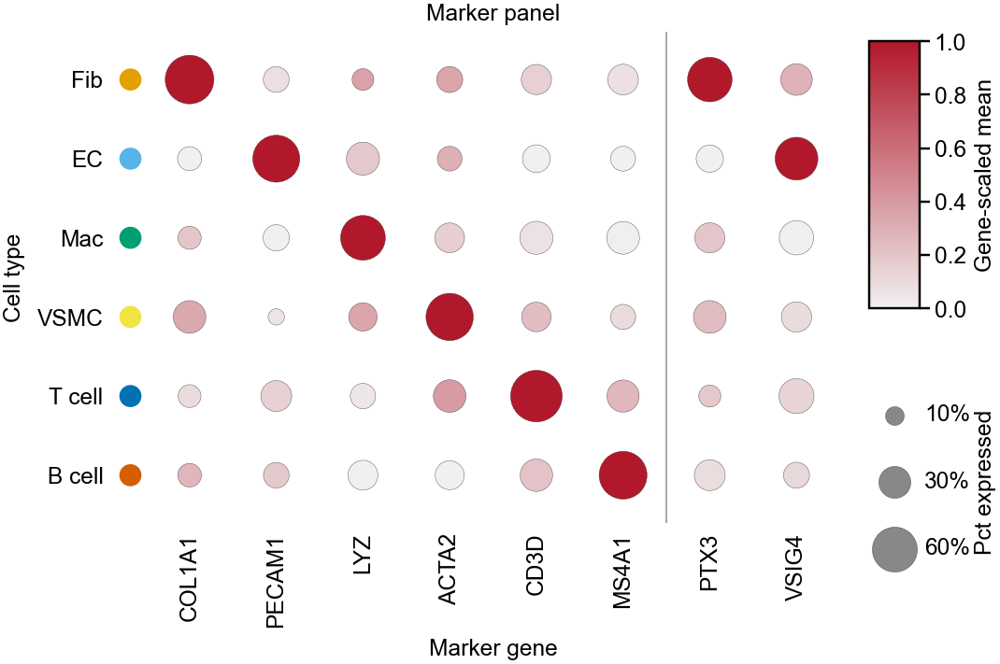
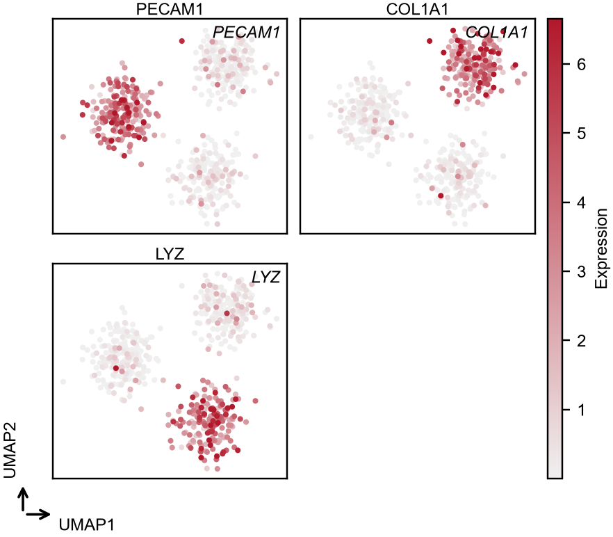
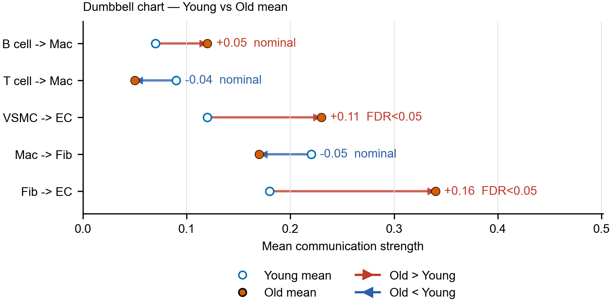
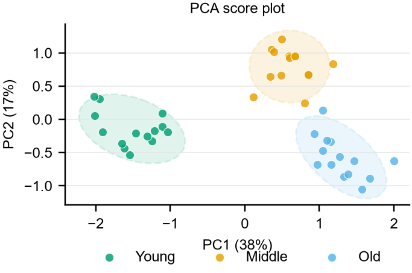
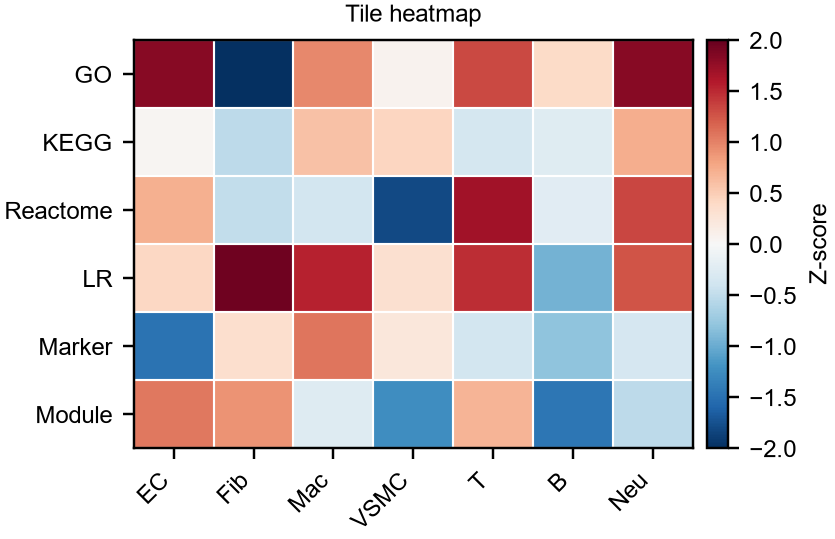
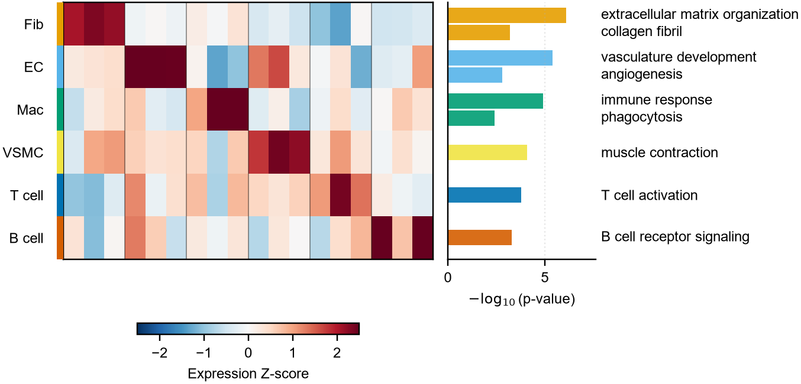
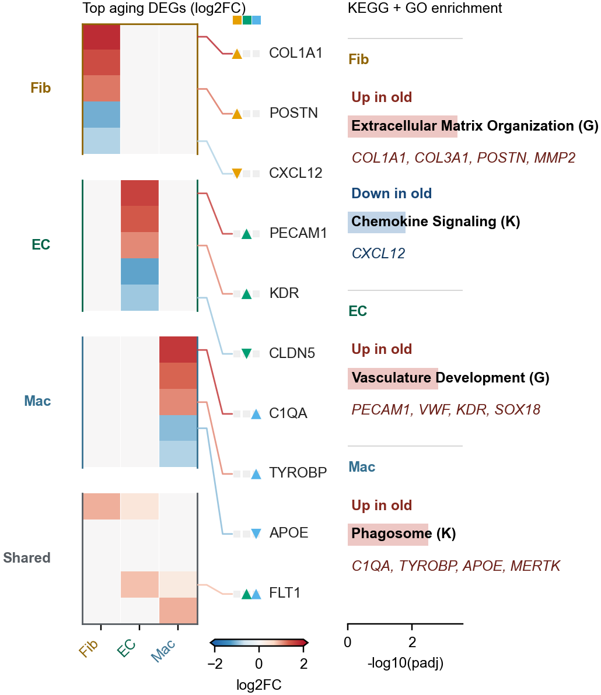
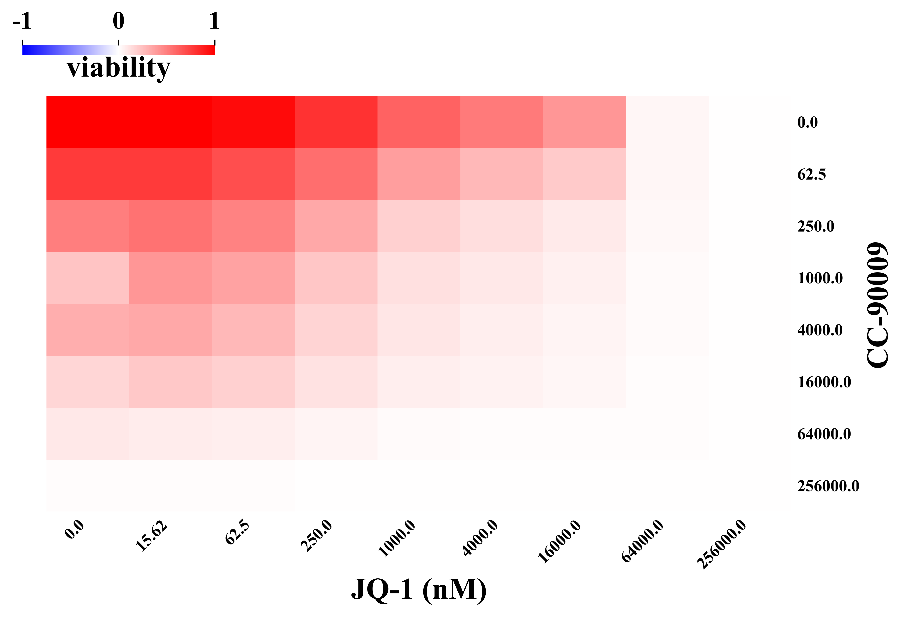

 Marker dot plot 单细胞 marker 表达矩阵。 颜色=gene-scaled mean(grey-red，默认 scseq 配色)，大小=pct expressed，左侧彩点=cell-type 颜色。 Omics / Marker / QC · drawing_yh/dotplot.py single-cell marker dotplot 原图源码/示例
 Embedding feature plot 基因表达投影到 UMAP/tSNE 的多基因网格。 共享 grey-red colorbar + 角落 UMAP 箭头轴，按非零百分位裁剪。 Omics / Marker / QC · drawing_yh/embedding.py single-cell umap feature 原图源码/示例
 Dumbbell chart Young vs Old 或处理前后均值比较。 箭头方向编码升降，适合通讯强度或 pathway score。 Omics / Comparison · drawing_yh/dumbbell.py dumbbell comparison 原图源码/示例
Volcano plot 差异分析结果，logFC × p-value。 适合快速筛选显著上/下调。 Omics / Differential · drawing_yh/volcano_plot/volcano.py volcano DEG 原图源码/示例
 PCA score plot 样本整体结构、批次、分组分离。 用于 QC 和组间结构展示。 Omics / Marker / QC · drawing_yh/pca/PCA.py PCA QC 原图源码/示例
Clustered heatmap 矩阵聚类、表达模式、样本/基因分组。 适合 feature 数中等的全局模式。 Omics / Heatmap · drawing_yh/heatmap/heatmap_clustered/heapmap_clustered.py heatmap cluster 原图源码/示例
 Tile heatmap 通路 × 细胞类型、组织 × feature 的紧凑矩阵。 适合报告里快速比较方向。 Omics / Heatmap · drawing_yh/heatmap/heatmap_tile_style/heatmap_tile_style.py heatmap tile 原图源码/示例
 Heatmap + per-row bars z-score 热图 + 每行 top 富集条(如各 cell type GO)。 左侧行彩条 + 列块分隔，右侧横向条标注通路。 Omics / Heatmap · drawing_yh/heatmap/row_bars.py single-cell heatmap enrichment 原图源码/示例
 OY-DEG heatmap + enrichment Old vs Young DEG log2FC 热图 + 动态 gene labels + Up/Down 富集块。 输入为已整理矩阵、block、label genes 和 enrichment blocks；DEG/enrichment 计算留在分析流程。 Omics / Heatmap · drawing_yh/heatmap/oydeg_enrichment.py single-cell DEG enrichment 原图源码/示例
 Dose-response heatmap 药物浓度 × 组合条件矩阵。 适合筛选敏感窗口。 Omics / Heatmap · drawing_yh/dose_response/heatmap_with_colorbar.py dose-response heatmap 原图源码/示例


{kind=link}
{kind=link}
{kind=link}
{kind=link}
{kind=link}
{kind=link}
{kind=link}
{kind=link}